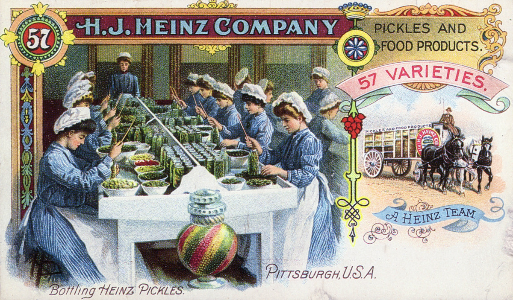
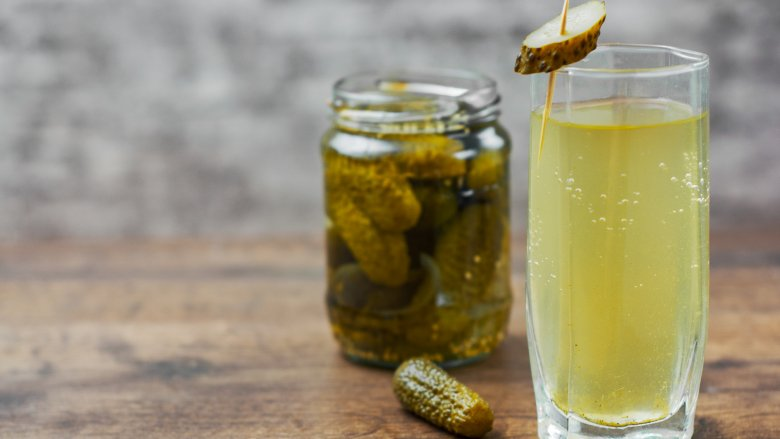

Ancient World
c. 2400 B.C.
Pickling—preserving foods in vinegar, brine or a similar solution—is one of the oldest methods of food preservation. Though the exact origins of the process are unknown, archaeologists believe ancient Mesopotamians pickled food as far back as 2400 B.C., according to the New York Food Museum. Several centuries later, cucumbers native to India were being pickled in the Tigris Valley.
c. 50 B.C.
Queen Cleopatra of Egypt credited the pickles in her diet with contributing to her health and legendary beauty. Meanwhile, Cleopatra’s lover Julius Caesar and other Roman emperors gave pickles to their troops to eat in the belief that they would make them strong.
A.D. 900
Dill, one of the most important herbs used in pickling cucumbers and other vegetables, arrived in Western Europe from its native Sumatra around A.D. 900, although ancient Greeks and Romans used it extensively centuries earlier.
Age of Exploration
1492
During the Age of Exploration, many sailors on transoceanic voyages suffered from scurvy, a nasty but all-too-common disease caused by a deficiency of Vitamin C. On his storied expedition to the New World, Christopher Columbus reportedly rationed pickles to his sailors, even going so far as to grow cucumbers in Haiti to restock for the rest of the trip. And that’s not all: Before he was an explorer, Amerigo Vespucci worked as a ship’s chandler in Seville, Spain—meaning he supplied ships with goods like preserved meat and vegetables. Known as the “Pickle-Dealer,” Vespucci even helped stock Columbus’s ships on his later, less successful voyages across the Atlantic.
1650s
By 1659, Dutch farmers in New York had begun growing cucumbers in the area that is now Brooklyn. Dealers bought the cucumbers, pickled them and sold them out of barrels on the street, beginning what would become the world’s largest pickle industry. Later waves of immigration to New York in the late 19th and early 20th centuries—including large numbers of Eastern European Jews, who introduced kosher dill pickles to America—would cement the city’s place at the center of the pickle world.
The 19th Century
1809 Napoleon Bonaparte had offered to pay 12,000 francs (the equivalent of today’s $250,000) to the person who could come up with the best way to pickle and preserve food for his troops. In 1809, French chef and confectioner Nicolas Appert, won the competition with a key insight: If he placed food in a bottle and removed all the air before sealing it, he could boil the bottle and preserve its contents. Using glass containers sealed with cork and wax, Appert was able to preserve not only vegetables and fruits, but also jellies, syrups, soups and dairy products.
1858 Early in the 1850s, the Scottish chemist James Young patented paraffin wax, which created a better seal in jars used to preserve food. Then in 1858, John Mason of Philadelphia patented the first Mason jar, made from a heavyweight glass that could withstand high temperatures during the canning process. Mason’s patent expired in 1879, but manufacturers of similar jars continued to use the Mason name.
1893 At the 1893 Chicago World’s Fair, “Pickle King” H.J. Heinz dispatched a few local boys to tempt fairgoers with a “free gift” if they visited Heinz’s out-of-the-way booth and tasted his wares. By the end of the fair, Heinz had given out some 1 million “pickle pins,” launching one of the most successful marketing gambits in U.S. history. H.J. Heinz Company, Inc. repeated the pickle pin promotion at the World’s Fairs of 1896, 1898 and 1939. Heinz’s dark-green pickle pins can still be bought today, joined by spin-offs like the ketchup pin and the golden pickle pin.
The 20th Century
1940s During World War II, the U.S. government rationed pickles, and 40 percent of the nation’s production of pickles went to the armed forces. In 1948, the trade organization Pickle Packers International, founded in 1893, launched International Pickle Week.
2000 After beating the Dallas Cowboys 41-14 on a day when temperatures reached 109˚ F, players from the Philadelphia Eagles football team famously credited their endurance to drinking pickle juice. A later study at Brigham Young University backed these claims with science, showing that knocking back pickle juice “relieved a cramp 45 percent faster” than drinking no fluids and about 37 percent faster than water.
